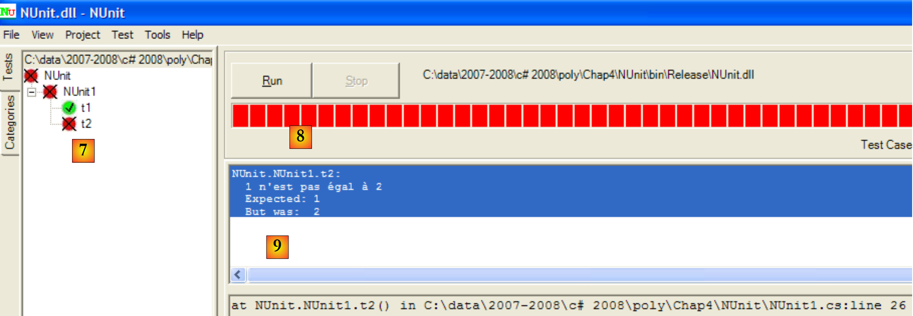
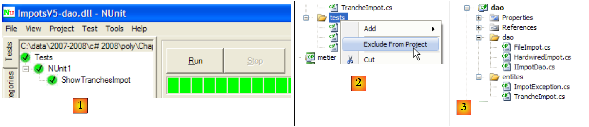
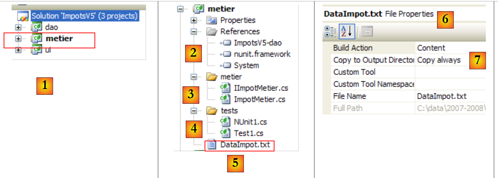
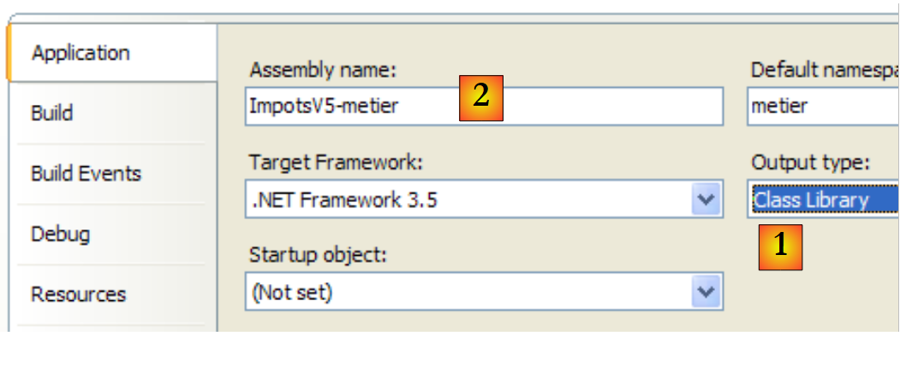
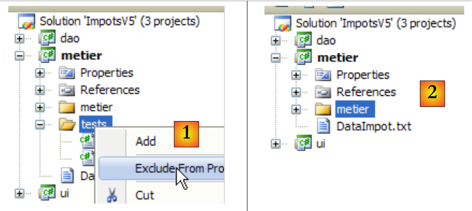
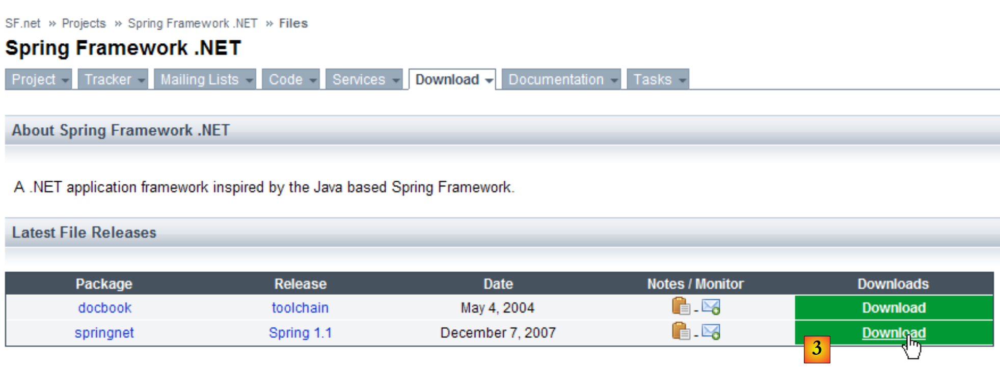

6. Architectures 3 couches
6.1. Introduction
Revenons sur la dernière version de l'application de calcul d'impôt :
using System;
namespace Chap3 {
class Program {
static void Main() {
// programme interactif de calcul d'Impot
// l'utilisateur tape trois données au clavier : marié nbEnfants salaire
// le programme affiche alors l'Impot à payer
...
// création d'un objet IImpot
IImpot impot = null;
try {
// création d'un objet IImpot
impot = new FileImpot("DataImpotInvalide.txt");
} catch (FileImpotException e) {
// affichage erreur
...
// arrêt programme
Environment.Exit(1);
}
// boucle infinie
while (true) {
// on demande les paramètres du calcul de l'impôt
Console.Write("Paramètres du calcul de l'Impot au format : Marié (o/n) NbEnfants Salaire ou rien pour arrêter :");
string paramètres = Console.ReadLine().Trim();
...
// les paramètres sont corrects - on calcule l'Impot
Console.WriteLine("Impot=" + impot.calculer(marié == "o", nbEnfants, salaire) + " euros");
// contribuable suivant
}//while
}
}
}
La solution précédente inclut des traitements classiques en programmation :
- la récupération de données mémorisées dans des fichiers, bases de données, ... lignes 12-21
- le dialogue avec l'utilisateur, lignes 26 (saisies) et 29 (affichages)
- l'utilisation d'un algorithme métier, ligne 29
La pratique a montré qu'isoler ces différents traitements dans des classes séparées améliorait la maintenabilité des applications. L'architecture d'une application ainsi structurée est la suivante :
 |
On appelle cette architecture, "architecture trois tiers", traduction de l'anglais "three tier architecture". Le terme "trois tiers" désigne normalement une architecture où chaque tier est sur une machine différente. Lorsque les tiers sont sur une même machine, l'architecture devient une architecture "trois couches".
- la couche [metier] est celle qui contient les règles métier de l'application. Pour notre application de calcul d'impôt, ce sont les règles qui permettent de calculer l'impôt d'un contribuable. Cette couche a besoin de données pour travailler :
- les tranches d'impôt, données qui changent chaque année
- le nombre d'enfants, le statut marital et le salaire annuel du contribuable
Dans le schéma ci-dessus, les données peuvent provenir de deux endroits :
- la couche d'accès aux données ou [dao] (DAO = Data Access Object) pour les données déjà enregistrées dans des fichiers ou bases de données. Ce pourrait être le cas ici des tranches d'impôt comme il a été fait dans la version précédente de l'application.
- la couche d'interface avec l'utilisateur ou [ui] (UI = User Interface) pour les données saisies par l'utilisateur ou affichées à l'utilisateur. Ce pourrait être le cas ici du nombre d'enfants, du statut marital et du salaire annuel du contribuable
- de façon générale, la couche [dao] s'occupe de l'accès aux données persistantes (fichiers, bases de données) ou non persistantes (réseau, capteurs, ...).
- la couche [ui] elle, s'occupe des interactions avec l'utilisateur s'il y en a un.
- les trois couches sont rendues indépendantes grâce à l'utilisation d'interfaces.
Nous allons reprendre l'application [Impots] déjà étudiée à plusieurs reprises pour lui donner une architecture 3 couches. Pour cela, nous allons étudier les couches [ui, metier, dao] les unes après les autres, en commençant par la couche [dao], couche qui s'occupe des données persistantes.
Auparavant, il nous faut définir les interfaces des différentes couches de l'application [Impots].
6.2. Les interfaces de l'application [Impots]
Rappelons qu'une interface définit un ensemble de signatures de méthodes. Les classes implémentant l'interface donnent un contenu à ces méthodes.
Revenons à l'architecture 3 couches de notre application :
 |
Dans ce type d'architecture, c'est souvent l'utilisateur qui prend les initiatives. Il fait une demande en [1] et reçoit une réponse en [8]. On appelle cela le cycle demande - réponse. Prenons l'exemple du calcul de l'impôt d'un contribuable. Celui-ci va nécessiter plusieurs étapes :
- la couche [ui] va devoir demander à l'utilisateur son nombre d'enfants, son statut marital et son salaire annuel. C'est l'opération [1] ci-dessus.
- ceci fait, la couche [ui] va demander à la couche métier de faire le calcul de l'impôt. Pour cela elle va lui transmettre les données qu'elle a reçues de l'utilisateur. C'est l'opération [2].
- la couche [metier] a besoin de certaines informations pour mener à bien son travail : les tranches d'impôt. Elle va demander ces informations à la couche [dao] avec le chemin [3, 4, 5, 6]. [3] est la demande initiale et [6] la réponse à cette demande.
- ayant toutes les données dont elle avait besoin, la couche [metier] calcule l'impôt.
- la couche [metier] peut maintenant répondre à la demande de la couche [ui] faite en (b). C'est le chemin [7].
- la couche [ui] va mettre en forme ces résultats puis les présenter à l'utilisateur. C'est le chemin [8].
- on pourrait imaginer que l'utilisateur fait des simulations d'impôt et qu'il veuille mémoriser celles-ci. Il utilisera le chemin [1-8] pour le faire.
On voit dans cette description qu'une couche est amenée à utiliser les ressources de la couche qui est à sa droite, jamais de celle qui est à sa gauche. Considérons deux couches contigües :
 |
La couche [A] fait des demandes à la couche [B]. Dans les cas les plus simples, une couche est implémentée par une unique classe. Une application évolue au cours du temps. Ainsi la couche [B] peut avoir des classes d'implémentation différentes [B1, B2, ...]. Si la couche [B] est la couche [dao], celle-ci peut avoir une première implémentation [B1] qui va chercher des données dans un fichier. Quelques années plus tard, on peut vouloir mettre les données dans une base de données. On va alors construire une seconde classe d'implémentation [B2]. Si dans l'application initiale, la couche [A] travaillait directement avec la classe [B1] on est obligés de réécrire partiellement le code de la couche [A]. Supposons par exemple qu'on ait écrit dans la couche [A] quelque chose comme suit :
- ligne 1 : une instance de la classe [B1] est créée
- ligne 3 : des données sont demandées à cette instance
Si on suppose, que la nouvelle classe d'implémentation [B2] utilise des méthodes de même signature que celle de la classe [B1], il faudra changer tous les [B1] en [B2]. Ca, c'est le cas très favorable et assez improbable si on n'a pas prêté attention à ces signatures de méthodes. Dans la pratique, il est fréquent que les classes [B1] et [B2] n'aient pas les mêmes signatures de méthodes et que donc une bonne partie de la couche [A] doive être totalement réécrite.
On peut améliorer les choses si on met une interface entre les couches [A] et [B]. Cela signifie qu'on fige dans une interface les signatures des méthodes présentées par la couche [B] à la couche [A]. Le schéma précédent devient alors le suivant :
 |
La couche [A] ne s'adresse désormais plus directement à la couche [B] mais à son interface [IB]. Ainsi dans le code de la couche [A], la classe d'implémentation [Bi] de la couche [B] n'apparaît qu'une fois, au moment de l'implémentation de l'interface [IB]. Ceci fait, c'est l'interface [IB] et non sa classe d'implémentation qui est utilisée dans le code. Le code précédent devient celui-ci :
- ligne 1 : une instance [ib] implémentant l'interface [IB] est créée par instanciation de la classe [B1]
- ligne 3 : des données sont demandées à l'instance [ib]
Désormais si on remplace l'implémentation [B1] de la couche [B] par une implémentation [B2], et que ces deux implémentations respectent la même interface [IB], alors seule la ligne 1 de la couche [A] doit être modifiée et aucune autre. C'est un grand avantage qui à lui seul justifie l'usage systématique des interfaces entre deux couches.
On peut aller encore plus loin et rendre la couche [A] totalement indépendante de la couche [B]. Dans le code ci-dessus, la ligne 1 pose problème parce qu'elle référence en dur la classe [B1]. L'idéal serait que la couche [A] puisse disposer d'une implémentation de l'interface [IB] sans avoir à nommer de classe. Ce serait cohérent avec notre schéma ci-dessus. On y voit que la couche [A] s'adresse à l'interface [IB] et on ne voit pas pourquoi elle aurait besoin de connaître le nom de la classe qui implémente cette interface. Ce détail n'est pas utile à la couche [A].
Le framework Spring (http://www.springframework.org) permet d'obtenir ce résultat. L'architecture précédente évolue de la façon suivante :
 |
La couche transversale [Spring] va permettre à une couche d'obtenir par configuration une référence sur la couche située à sa droite sans avoir à connaître le nom de la classe d'implémentation de la couche. Ce nom sera dans les fichiers de configuration et non dans le code C#. Le code C# de la couche [A] prend alors la forme suivante :
- ligne 1 : une instance [ib] implémentant l'interface [IB] de la couche [B]. Cette instance est créée par Spring sur la base d'informations trouvées dans un fichier de configuration. Spring va s'occuper de créer :
- l'instance [b] implémentant la couche [B]
- l'instance [a] implémentant la couche [A]. Cette instance sera initialisée. Le champ [ib] ci-dessus recevra pour valeur la référence [b] de l'objet implémentant la couche [B]
- ligne 3 : des données sont demandées à l'instance [ib]
On voit maintenant que, la classe d'implémentation [B1] de la couche B n'apparaît nulle part dans le code de la couche [A]. Lorsque l'implémentation [B1] sera remplacée par une nouvelle implémentation [B2], rien ne changera dans le code de la classe [A]. On changera simplement les fichiers de configuration de Spring pour instancier [B2] au lieu de [B1].
Le couple Spring et interfaces C# apporte une amélioration décisive à la maintenance d'applications en rendant les couches de celles-ci étanches entre elles. C'est cette solution que nous utiliserons pour une nouvelle version de l'application [Impots].
Revenons à l'architecture trois couches de notre application :
 |
Dans les cas simples, on peut partir de la couche [metier] pour découvrir les interfaces de l'application. Pour travailler, elle a besoin de données :
- déjà disponibles dans des fichiers, bases de données ou via le réseau. Elles sont fournies par la couche [dao].
- pas encore disponibles. Elles sont alors fournies par la couche [ui] qui les obtient auprès de l'utilisateur de l'application.
Quelle interface doit offrir la couche [dao] à la couche [metier] ? Quelles sont les interactions possibles entre ces deux couches ? La couche [dao] doit fournir les données suivantes à la couche [metier] :
- les tranches d'impôt
Dans notre application, la couche [dao] exploite des données existantes mais n'en crée pas de nouvelles. Une définition de l'interface de la couche [dao] pourrait être la suivante :
using Entites;
namespace Dao {
public interface IImpotDao {
// les tranches d'impôt
TrancheImpot[] TranchesImpot{get;}
}
}
- ligne 3 : la couche [dao] sera placée dans l'espace de noms [Dao]
- ligne 6 : l'interface IImpotDao définit la propriété TranchesImpot qui fournira les tranches d'impôt à la couche [métier].
- ligne 1 : importe l'espace de noms dans lequel est définie la structure TrancheImpot :
namespace Entites {
// une tranche d'impôt
public struct TrancheImpot {
public decimal Limite { get; set; }
public decimal CoeffR { get; set; }
public decimal CoeffN { get; set; }
}
}
Revenons à l'architecture trois couches de notre application :
 |
Quelle interface la couche [metier] doit-elle présenter à la couche [ui] ? Rappelons les interactions entre ces deux couches :
- la couche [ui] demande à l'utilisateur son nombre d'enfants, son statut marital et son salaire annuel. C'est l'opération [1] ci-dessus.
- ceci fait, la couche [ui] va demander à la couche métier de faire le calcul des sièges. Pour cela elle va lui transmettre les données qu'elle a reçues de l'utilisateur. C'est l'opération [2].
Une définition de l'interface de la couche [metier] pourrait être la suivante :
namespace Metier {
interface IImpotMetier {
int CalculerImpot(bool marié, int nbEnfants, int salaire);
}
}
- ligne 1 : on mettra tout ce qui concerne la couche [metier] dans l'espace de noms [Metier].
- ligne 2 : l'interface IImpotMetier ne définit qu'une méthode : celles qui permet de calculer l'impôt d'un contribuable à partir de son état marital, son nombre d'enfants et son salaire annuel.
Nous étudions une première implémentation de cette architecture en couches.
6.3. Application exemple - version 4
6.3.1. Le projet Visual Studio
Le projet Visual Studio sera le suivant :
 |
- [1] : le dossier [Entites] contient les objets transversaux aux couches [ui, metier, dao] : la structure TrancheImpot, l'exception FileImpotException.
- [2] : le dossier [Dao] contient les classes et interfaces de la couche [dao]. Nous utiliserons deux implémentations de l'interface IImpotDao : la classe HardwiredImpot étudiée au paragraphe 4.10 et FileImpot étudiée au paragraphe 5.8.
- [3] : le dossier [Metier] contient les classes et interfaces de la couche [metier]
- [4] : le dossier [Ui] contient les classes de la couche [ui]
- [5] : le fichier [DataImpot.txt] contient les tranches d'impôt utilisées par l'implémentation FileImpot de la couche [dao]. Il est configuré [6] pour être automatiquement recopié dans le dossier d'exécution du projet. ### 6.3.2. Les entités de l'application
Revenons sur l'architecture 3 couches de notre application :
 |
Nous appelons entités les classes transversales aux couches. C'est le cas en général des classes et structures qui encapsulent des données de la couche [dao]. Ces entités remontent en général jusqu'à la couche [ui].
Les entités de l'application sont les suivantes :
La structure TrancheImpot
namespace Entites {
// une tranche d'impôt
public struct TrancheImpot {
public decimal Limite { get; set; }
public decimal CoeffR { get; set; }
public decimal CoeffN { get; set; }
}
}
L'exception FileImpotException
using System;
namespace Entites {
public class FileImpotException : Exception {
// codes d'erreur
[Flags]
public enum CodeErreurs { Acces = 1, Ligne = 2, Champ1 = 4, Champ2 = 8, Champ3 = 16 };
// code d'erreur
public CodeErreurs Code { get; set; }
// constructeurs
public FileImpotException() {
}
public FileImpotException(string message)
: base(message) {
}
public FileImpotException(string message, Exception e)
: base(message, e) {
}
}
}
Note : la classe FileImpotException n'est utile que si la couche [dao] est implémentée par la classe FileImpot.
6.3.3. La couche [dao]
 |
Rappelons l'interface de la couche [dao] :
using Entites;
namespace Dao {
public interface IImpotDao {
// les tranches d'impôt
TrancheImpot[] TranchesImpot{get;}
}
}
Nous implémenterons cette interface de deux façons différentes.
Tout d'abord avec la classe HardwiredImpot étudiée au paragraphe 4.10 :
using System;
using Entites;
namespace Dao {
public class HardwiredImpot : IImpotDao {
// tableaux de données nécessaires au calcul de l'impôt
decimal[] limites = { 4962M, 8382M, 14753M, 23888M, 38868M, 47932M, 0M };
decimal[] coeffR = { 0M, 0.068M, 0.191M, 0.283M, 0.374M, 0.426M, 0.481M };
decimal[] coeffN = { 0M, 291.09M, 1322.92M, 2668.39M, 4846.98M, 6883.66M, 9505.54M };
// tranches d'impôt
public TrancheImpot[] TranchesImpot { get; private set; }
// constructeur
public HardwiredImpot() {
// création du tableau des tranches d'impôt
TranchesImpot = new TrancheImpot[limites.Length];
// remplissage
for (int i = 0; i < TranchesImpot.Length; i++) {
TranchesImpot[i] = new TrancheImpot { Limite = limites[i], CoeffR = coeffR[i], CoeffN = coeffN[i] };
}
}
}// classe
}// namespace
- ligne 5 : la classe HardwiredImpot implémente l'interface IImpotDao
- ligne 12 : implémentation de la propriété TranchesImpot de l'interface IImpotDao. Cette propriété est une propriété automatique. Elle implémente la méthode get de la propriété TranchesImpot de l'interface IImpotDao. On a de plus déclaré une méthode set privée donc interne à la classe afin que le constructeur des lignes 15-22 puisse initialiser le tableau des tranches d'impôt.
L'interface IImpotDao sera également implémentée par la classe FileImpot étudiée au paragraphe 5.8 :
using System;
using System.Collections.Generic;
using System.IO;
using System.Text.RegularExpressions;
using Entites;
namespace Dao {
class FileImpot : IImpotDao {
// fichier des données
public string FileName { get; set; }
// tranches d'impôt
public TrancheImpot[] TranchesImpot { get; private set; }
// constructeur
public FileImpot(string fileName) {
// on mémorise le nom du fichier
FileName = fileName;
// données
List<TrancheImpot> listTranchesImpot = new List<TrancheImpot>();
int numLigne = 1;
// exception
FileImpotException fe = null;
// lecture contenu du fichier fileName, ligne par ligne
Regex pattern = new Regex(@"s*:\s*");
// au départ pas d'erreur
FileImpotException.CodeErreurs code = 0;
try {
using (StreamReader input = new StreamReader(FileName)) {
while (!input.EndOfStream && code == 0) {
// ligne courante
string ligne = input.ReadLine().Trim();
// on ignore les lignes vides
if (ligne == "")
continue;
// ligne décomposée en trois champs séparés par :
string[] champsLigne = pattern.Split(ligne);
// a-t-on 3 champs ?
if (champsLigne.Length != 3) {
code = FileImpotException.CodeErreurs.Ligne;
}
// conversions des 3 champs
decimal limite = 0, coeffR = 0, coeffN = 0;
if (code == 0) {
if (!Decimal.TryParse(champsLigne[0], out limite))
code = FileImpotException.CodeErreurs.Champ1;
if (!Decimal.TryParse(champsLigne[1], out coeffR))
code |= FileImpotException.CodeErreurs.Champ2;
if (!Decimal.TryParse(champsLigne[2], out coeffN))
code |= FileImpotException.CodeErreurs.Champ3;
;
}
// erreur ?
if (code != 0) {
// on note l'erreur
fe = new FileImpotException(String.Format("Ligne n° {0} incorrecte", numLigne)) { Code = code };
} else {
// on mémorise la nouvelle tranche d'impôt
listTranchesImpot.Add(new TrancheImpot() { Limite = limite, CoeffR = coeffR, CoeffN = coeffN });
// ligne suivante
numLigne++;
}
}
}
} catch (Exception e) {
// on note l'erreur
fe = new FileImpotException(String.Format("Erreur lors de la lecture du fichier {0}", FileName), e) { Code = FileImpotException.CodeErreurs.Acces };
}
// erreur à signaler ?
if (fe != null) {
// on lance l'exception
throw fe;
} else {
// on rend la liste listImpot dans le tableau tranchesImpot
TranchesImpot = listTranchesImpot.ToArray();
}
}
}
}
- ce code a déjà été étudié au paragraphe 5.8.
- ligne 14 : la méthode TranchesImpot de l'interface IImpotDao
- ligne 76 : initialisation des tranches d'impôt dans le constructeur de la classe, à partir du fichier dont le contructeur a reçu le nom ligne 17.
6.3.4. La couche [metier]
 |
Rappelons l'interface de cette couche :
namespace Metier {
public interface IImpotMetier {
int CalculerImpot(bool marié, int nbEnfants, int salaire);
}
}
L'implémentation ImpotMetier de cette interface est la suivante :
using Entites;
using Dao;
namespace Metier {
public class ImpotMetier : IImpotMetier {
// couche [dao]
private IImpotDao Dao { get; set; }
// les tranches d'impôt
private TrancheImpot[] tranchesImpot;
// constructeur
public ImpotMetier(IImpotDao dao) {
// mémorisation
Dao = dao;
// tranches d'impôt
tranchesImpot = dao.TranchesImpot;
}
// calcul de l'impôt
public int CalculerImpot(bool marié, int nbEnfants, int salaire) {
// calcul du nombre de parts
decimal nbParts;
if (marié)
nbParts = (decimal)nbEnfants / 2 + 2;
else
nbParts = (decimal)nbEnfants / 2 + 1;
if (nbEnfants >= 3)
nbParts += 0.5M;
// calcul revenu imposable & Quotient familial
decimal revenu = 0.72M * salaire;
decimal QF = revenu / nbParts;
// calcul de l'impôt
tranchesImpot[tranchesImpot.Length - 1].Limite = QF + 1;
int i = 0;
while (QF > tranchesImpot[i].Limite)
i++;
// retour résultat
return (int)(revenu * tranchesImpot[i].CoeffR - nbParts * tranchesImpot[i].CoeffN);
}//calculer
}//classe
}
- ligne 5 : la classe [Metier] implémente l'interface [IImpotMetier].
- lignes 14-19 : la couche [metier] doit collaborer avec la couche [dao]. Elle doit donc avoir une référence sur l'objet implémentant l'interface IImpotDao. C'est pourquoi cette reférence est-elle passée en paramètre au constructeur.
- ligne 16 : la référence sur la couche [dao] est mémorisé dans le champ privé de la ligne 8
- ligne 18 : à partir de cette référence, le constructeur demande le tableau des tranches d'impôt et en mémorise une référence dans la propriété privée de la ligne 8.
- lignes 22-41 : implémentation de la méthode CalculerImpot de l'interface IImpotMetier. Cette implémentation utilise le tableau des tranches d'impôt initialisé par le constructeur.
6.3.5. La couche [ui]
 |
Les classes de dialogue avec l'utilisateur des versions 2 et 3 étaient très proches. Celle de la version 2 était la suivante :
using System;
namespace Chap2 {
public class Program {
static void Main() {
...
// création d'un objet IImpot
IImpot impot = new HardwiredImpot();
// boucle infinie
while (true) {
...
}//while
}
}
}
et celle de la version 3 :
using System;
namespace Chap3 {
public class Program {
static void Main() {
...
// création d'un objet IImpot
IImpot impot = null;
try {
// création d'un objet IImpot
impot = new FileImpot("DataImpotInvalide.txt");
} catch (FileImpotException e) {
// affichage erreur
string msg = e.InnerException == null ? null : String.Format(", Exception d'origine : {0}", e.InnerException.Message);
Console.WriteLine("L'erreur suivante s'est produite : [Code={0},Message={1}{2}]", e.Code, e.Message, msg == null ? "" : msg);
// arrêt programme
Environment.Exit(1);
}
// boucle infinie
while (true) {
...
}//while
}
}
}
Seule change la façon d'instancier l'objet de type IImpot qui permet le calcul de l'impôt. Cet objet correspond ici à notre couche [métier].
Pour une implémentation [dao] avec la classe HardwiredImpot, la classe de dialogue est la suivante :
using System;
using Metier;
using Dao;
using Entites;
namespace Ui {
public class Dialogue2 {
static void Main() {
...
// on crée les couches [metier et dao]
IImpotMetier metier = new ImpotMetier(new HardwiredImpot());
// boucle infinie
while (true) {
...
// les paramètres sont corrects - on calcule l'Impot
Console.WriteLine("Impot=" + metier.CalculerImpot(marié == "o", nbEnfants, salaire) + " euros");
// contribuable suivant
}//while
}
}
}
- ligne 12 : instanciation des couches [dao] et [metier]. On rappelle que la couche [metier] a besoin de la couche [dao].
- ligne 18 : utilisation de la couche [metier] pour calculer l'impôt
Pour une implémentation [dao] avec la classe FileImpot, la classe de dialogue est la suivante :
using System;
using Metier;
using Dao;
using Entites;
namespace Ui {
public class Dialogue {
static void Main() {
...
// on crée les couches [metier et dao]
IImpotMetier metier = null;
try {
// création couche [metier]
metier = new ImpotMetier(new FileImpot("DataImpot.txt"));
} catch (FileImpotException e) {
// affichage erreur
string msg = e.InnerException == null ? null : String.Format(", Exception d'origine : {0}", e.InnerException.Message);
Console.WriteLine("L'erreur suivante s'est produite : [Code={0},Message={1}{2}]", e.Code, e.Message, msg == null ? "" : msg);
// arrêt programme
Environment.Exit(1);
}
// boucle infinie
while (true) {
...
// les paramètres sont corrects - on calcule l'Impot
Console.WriteLine("Impot=" + metier.CalculerImpot(marié == "o", nbEnfants, salaire) + " euros");
// contribuable suivant
}//while
}
}
}
- ligne 11-21 : instanciation des couches [dao] et [metier]. L'instanciation de la couche [dao] pouvant lancer une exception, celle-ci est gérée
- ligne 26 : utilisation de la couche [metier] pour calculer l'impôt, comme dans la version précédente
6.3.6. Conclusion
L'architecture en couches et l'utilisation d'interfaces a amené une certaine souplesse à notre application. Celle-ci apparaît notamment dans la façon dont la couche [ui] instancie les couches [dao] et [métier] :
// on crée les couches [metier et dao]
IImpotMetier metier = new ImpotMetier(new HardwiredImpot());
dans un cas et :
// on crée les couches [metier et dao]
IImpotMetier metier = null;
try {
// création couche [metier]
metier = new ImpotMetier(new FileImpot("DataImpot.txt"));
} catch (FileImpotException e) {
// affichage erreur
string msg = e.InnerException == null ? null : String.Format(", Exception d'origine : {0}", e.InnerException.Message);
Console.WriteLine("L'erreur suivante s'est produite : [Code={0},Message={1}{2}]", e.Code, e.Message, msg == null ? "" : msg);
// arrêt programme
Environment.Exit(1);
}
dans l'autre. Si on excepte la gestion de l'exception dans le cas 2, l'instanciation des couches [dao] et [metier] est similaire dans les deux applications. Une fois les couches [dao] et [metier] instanciées, le code de la couche [ui] est identique dans les deux cas. Ceci est du au fait que la couche [métier] est manipulée via son interface IImpotMetier et non via la classe d'implémentation de celle-ci. Changer la couche [metier] ou la couche [dao] de l'application sans changer leurs interfaces reviendra toujours à changer les seules lignes précédentes dans la couche [ui].
Un autre exemple de souplesse amenée par cette architecture est celui de l'implémentation de la couche [métier] :
using Entites;
using Dao;
namespace Metier {
public class ImpotMetier : IImpotMetier {
// couche [dao]
private IImpotDao Dao { get; set; }
// les tranches d'impôt
private TrancheImpot[] tranchesImpot;
// constructeur
public ImpotMetier(IImpotDao dao) {
// mémorisation
Dao = dao;
// tranches d'impôt
tranchesImpot = dao.TranchesImpot;
}
// calcul de l'impôt
public int CalculerImpot(bool marié, int nbEnfants, int salaire) {
...
}//calculer
}//classe
}
Ligne 14, on voit que la couche [métier] est construite à partir d'une référence sur l'interface de la couche [dao]. Changer l'implémentation de cette dernière a donc un impact zéro sur la couche [métier]. C'est pour cela, que notre unique implémentation de la couche [métier] a pu travailler sans modifications avec deux implémentations différentes de la couche [dao].
6.4. Application exemple - version 5
 |
Cette nouvelle version reprend la précédente en y apportant les modifications suivantes :
- les couches [métier] et [dao] sont chacune encapsulées dans une DLL et testée avec le framework de tests unitaires NUnit.
- l'intégration des couches est assurée par le framework Spring
Dans les grands projets, plusieurs développeurs travaillent sur le même projet. Les architectures en couches facilitent ce mode de travail : parce que les couches communiquent entre-elles avec des interfaces bien définies, un développeurs travaillant sur une couche n'a pas à se préoccuper du travail des autres développeurs sur les autres couches. Il suffit juste que tout le monde respecte les interfaces.
Ci-dessus, le développeur de la couche [métier] aura besoin au moment des tests de sa couche d'une implémentation de la couche [dao]. Tant que celle-ci n'est pas terminée, il peut utiliser une implémentation factice de la couche [dao] tant qu'elle respecte l'interface IImpotDao. C'est là également un avantage de l'architecture en couches : un retard dans la couche [dao] n'empêche pas les tests de la couche [métier]. L'implémentation factice de la couche [dao] a également l'avantage d'être bien souvent plus facile à mettre en oeuvre que la véritable couche [dao] qui peut nécessiter de lancer un SGBD, d'avoir des connexions réseau, ...
Lorsque la couche [dao] est terminée et testée, elle sera fournie aux développeurs de la couche [métier] sous la forme d'une DLL plutôt que de code source. Au final, l'application est souvent délivrée sous la forme d'un exécutable .exe (celui de la couche [ui]) et de bibliothèques de classes .dll (les autres couches).
6.4.1. NUnit
Les tests faits jusqu'à maintenant pour nos diverses applications reposaient sur une vérification visuelle. On vérifiait qu'on obtenait à l'écran ce qui était attendu. C'est une méthode inutilisable lorsqu'il y a de nombreux tests à faire. L'être humain est en effet sujet à la fatigue et sa capacité à vérifier des tests s'émousse au fil de la journée. Les tests doivent alors être automatisés et viser à ne nécessiter aucune intervention humaine.
Une application évolue au fil du temps. A chaque évolution, on doit vérifier que l'application ne "régresse" pas, c.a.d. qu'elle continue à passer les tests de bon fonctionnement qui avaient été faits lors de son écriture initiale. On appelle ces tests, des tests de "non régression". Une application un peu importante peut nécessiter des centaines de tests. On teste en effet chaque méthode de chaque classe de l'application. On appelle cela des tests unitaires. Ceux-ci peuvent mobiliser beaucoup de développeurs s'ils n'ont pas été automatisés.
Des outils ont été développés pour automatiser les tests. L'un d'eux s'appelle NUnit. Il est disponible sur le site [http://www.nunit.org] :
 |  |
C'est la version 2.4.6 ci-dessus qui a été utilisée pour ce document (mars 2008). L'installation place une icône [1] sur le bureau :
 |
Un double-clic sur l'icône [1] lance l'interface graphique de NUnit [2]. Celle-ci n'aide en rien à l'automatisation des tests puisque de nouveau nous sommes ramenés à une vérification visuelle : le testeur vérifie les résultats des tests affichés dans l'interface graphique. Néanmoins les tests peuvent être également exécutés par des outils batch et leurs résultats enregistrés dans des fichiers XML. C'est cette méthode qui est utilisée par les équipes de développement : les tests sont lancés la nuit et les développeurs ont le résultat le lendemain matin.
Examinons avec un exemple le principe des tests NUnit. Tout d'abord, créons un nouveau projet C# de type Console Application :
 |
En [1], on voit les références du projet. Ces références sont des DLL contenant des classes et interfaces utilisées par le projet. Celles présentées en [1] sont incluses par défaut dans chaque nouveau projet C#. Pour pouvoir utiliser les classes et interfaces du framework NUnit, il nous faut ajouter [2] une nouvelle référence au projet.
 |
Dans l'onglet .NET ci-dessus, nous choisissons le composant [nunit.framework]. Les composants [nunit.*] ci-dessus ne sont pas des composants présents par défaut dans l'environnement .NET. Ils y ont été amenés par l'installation précédente du framework NUnit. Une fois l'ajout de la référence validée, celle-ci apparaît [4] dans la liste des références du projet.
Avant génération de l'application, le dossier [bin/Release] du projet est vide. Après génération (F6), on peut constater que le dossier [bin/Release] n'est plus vide :
 |
En [6], on voit la présence de la DLL [nunit.framework.dll]. C'est l'ajout de la référence [nunit.framework] qui a provoqué la copie de cette DLL dans le dossier d'exécution. Celui-ci est en effet l'un des dossiers qui seront explorés par le CLR (Common Language Runtime) .NET pour trouver les classes et interfaces référencées par le projet.
Construisons une première classe de test NUnit. Pour cela, nous supprimons la classe [Program.cs] générée par défaut puis nous ajoutons une nouvelle classe [Nunit1.cs] au projet. Nous supprimons également les références inutiles [7].
La classe de test NUnit1 sera la suivante :
using System;
using NUnit.Framework;
namespace NUnit {
[TestFixture]
public class NUnit1 {
public NUnit1() {
Console.WriteLine("constructeur");
}
[SetUp]
public void avant() {
Console.WriteLine("Setup");
}
[TearDown]
public void après() {
Console.WriteLine("TearDown");
}
[Test]
public void t1() {
Console.WriteLine("test1");
Assert.AreEqual(1, 1);
}
[Test]
public void t2() {
Console.WriteLine("test2");
Assert.AreEqual(1, 2, "1 n'est pas égal à 2");
}
}
}
- ligne 6 : la classe NUnit1 doit être publique. Le mot clé public n'est pas généré par défaut par Visual Studio. Il faut le rajouter.
- ligne 5 : l'attribut [TestFixture] est un attribut NUnit. Il indique que la classe est une classe de test.
- lignes 7-9 : le constructeur. Il n'est utilisé ici que pour écrire un message à l'écran. On veut voir quand il est exécuté.
- ligne 10 : l'attribut [SetUp] définit une méthode exécutée avant chaque test unitaire.
- ligne 14 : l'attribut [TearDown] définit une méthode exécuté après chaque test unitaire.
- ligne 18 : l'attribut [Test] définit une méthode de test. Pour chaque méthode annotée avec l'attribut [Test], la méthode annotée [SetUp] sera exécutée avant le test et la méthode annotée [TearDown] sera exécutée après le test.
- ligne 21 : l'une des méthodes [Assert.*] définies par le framework NUnit. On trouve les méthodes [Assert] suivantes :
- [Assert.AreEqual(expression1, expression2)] : vérifie que les valeurs des deux expressions sont égales. De nombreux types d'expression sont acceptés (int, string, float, double, decimal, ...). Si les deux expressions ne sont pas égales, alors une exception est lancée.
- [Assert.AreEqual(réel1, réel2, delta)] : vérifie que deux réels sont égaux à delta près, c.a.d abs(réel1-réel2)<=delta. On pourra écrire par exemple [Assert.AreEqual(réel1, réel2, 1E-6)] pour vérifier que deux valeurs sont égales à 10-6 près.
- [Assert.AreEqual(expression1, expression2, message)] et [Assert.AreEqual(réel1, réel2, delta, message)] sont des variantes permettant de préciser le message d'erreur à associer à l'exception lancée lorsque la méthode [Assert.AreEqual] échoue.
- [Assert.IsNotNull(object)] et [Assert.IsNotNull(object, message)] : vérifie que object n'est pas égal à null.
- [Assert.IsNull(object)] et [Assert.IsNull(object, message)] : vérifie que object est égal à null.
- [Assert.IsTrue(expression)] et [Assert.IsTrue(expression, message)] : vérifie que expression est égale à true.
- [Assert.IsFalse(expression)] et [Assert.IsFalse(expression, message)] : vérifie que expression est égale à false.
- [Assert.AreSame(object1, object2)] et [Assert.AreSame(object1, object2, message)] : vérifie que les références object1 et object2 désignent le même objet.
- [Assert.AreNotSame(object1, object2)] et [Assert.AreNotSame(object1, object2, message)] : vérifie que les références object1 et object2 ne désignent pas le même objet.
- ligne 21 : l'assertion doit réussir
- ligne 26 : l'assertion doit échouer
Configurons le projet afin que sa génération produise une DLL plutôt qu'un exécutable .exe :
 |
- en [1] : propriétés du projet
- en [2, 3] : comme type de projet, on choisit [Class Library] (Bibliothèque de classes)
- en [4] : la génération du projet produira une DLL (assembly) appelée [Nunit.dll]
Utilisons maintenant, NUnit pour exécuter la classe de test :
 |
- en [1] : ouverture d'un projet NUnit
- en [2, 3] : on charge la DLL bin/Release/Nunit.dll produite par la génération du projet C#
- en [4] : la DLL a été chargée
- en [5] : l'arbre des tests
- en [6] : on les exécute
 |
- en [7] : les résultats : t1 a réussi, t2 a échoué
- en [8] : une barre rouge indique l'échec global de la classe de tests
- en [9] : le message d'erreur lié au test raté
 |
- en [11] : les différents onglets de la fenêtre des résultats
- en [12] : l'onglet [Console.Out]. On y voit que :
- le constructeur n'a été exécuté qu'une fois
- la méthode [SetUp] a été exécutée avant chacun des deux tests
- la méthode [TearDown] a été exécutée après chacun des deux tests
Il est possible de préciser les méthodes à tester :
 |
- en [1] : on demande l'affichage d'une case à cocher à côté de chaque test
- en [2] : on coche les tests à exécuter
- en [3] : on les exécute
Pour corriger les erreurs, il suffit de corriger le projet C# et de le régénérer. NUnit détecte que la DLL qu'il teste a été changée et charge la nouvelle automatiquement. Il suffit alors de relancer les tests.
Considérons la nouvelle classe de test suivante :
using System;
using NUnit.Framework;
namespace NUnit {
[TestFixture]
public class NUnit2 : AssertionHelper {
public NUnit2() {
Console.WriteLine("constructeur");
}
[SetUp]
public void avant() {
Console.WriteLine("Setup");
}
[TearDown]
public void après() {
Console.WriteLine("TearDown");
}
[Test]
public void t1() {
Console.WriteLine("test1");
Expect(1, EqualTo(1));
}
[Test]
public void t2() {
Console.WriteLine("test2");
Expect(1, EqualTo(2), "1 n'est pas égal à 2");
}
}
}
A partir de la version 2.4 de NUnit, une nouvelle syntaxe est devenue disponible, celles des lignes 21 et 26. Pour cela, la classe de test doit dériver de la classe AssertionHelper (ligne 6).
La correspondance (non exhaustive) entre ancienne et nouvelle syntaxe est la suivante :
Ajoutons le test suivant à la classe NUnit2 :
[Test]
public void t3() {
bool vrai = true, faux = false;
Expect(vrai, True);
Expect(faux, False);
Object obj1 = new Object(), obj2 = null, obj3=obj1;
Expect(obj1, Not.Null);
Expect(obj2, Null);
Expect(obj3, SameAs(obj1));
double d1 = 4.1, d2 = 6.4, d3 = d1;
Expect(d1, EqualTo(d3).Within(1e-6));
Expect(d1, Not.EqualTo(d2));
}
Si on génère (F6) la nouvelle DLL du projet C#, le projet NUnit devient le suivant :
 |
- en [1] : la nouvelle classe de test [NUnit2] a été automatiquement détectée
- en [2] : on exécute le test t3 de NUnit2
- en [3] : le test t3 a été réussi
Pour approfondir NUnit, on lira l'aide de NUnit :
 |  |
6.4.2. La solution Visual Studio
 |
Nous allons construire progressivement la solution Visual Studio suivante :
 |
- en [1] : la solution ImpotsV5 est formée de trois projets, un pour chacune des trois couches de l'application
- en [2] : le projet [dao] de la couche [dao]
- en [3] : le projet [metier] de la couche [metier]
- en [4] : le projet [ui] de la couche [ui]
La solution ImpotsV5 peut être construite de la façon suivante :
1  | 234  | 5  |
- en [1] : créer un nouveau projet
- en [2] : choisir une application console
- en [3] : appeler le projet [dao]
- en [4] : créer le projet
- en [5] : une fois le projet créé, le sauvegarder
 |
- en [6] : garder le nom [dao] pour le projet
- en [7] : préciser un dossier pour enregistrer le projet et sa solution
- en [8] : donner un nom à la solution
- en [9] : indiquer que la solution doit avoir son propre dossier
- en [10] : enregistrer le projet et sa solution
- en [11] : le projet [dao] dans sa solution ImpotsV5
 |
- en [12] : le dossier de la solution ImpotsV5. Il contient le dossier [dao] du dossier [dao].
- en [13] : le contenu du dossier [dao]
- en [14] : on ajoute un nouveau projet à la solution ImpotsV5
 |
- en [15] : le nouveau projet s'appelle [metier]
- en [16] : la solution avec ses deux projets
- en [17] : la solution, une fois qu'on lui a ajouté le 3ième projet [ui]
 |
- en [18] : le dossier de la solution et les dossiers des trois projets
- lorsqu'on exécute une solution par (Ctrl+F5), c'est le projet actif qui est exécuté. Il en est de même lorsqu'on génère (F6) la solution. Le nom du project actif est en gras [19] dans la solution.
- en [20] : pour changer le projet actif de la solution
- en [21] : le projet [metier] est désormais le projet actif de la solution
6.4.3. La couche [dao]
 |
 |
Les références du projet (cf [1] dans le projet)
On ajoute la référence [nunit.framework] nécessaire aux tests [NUnit]
Les entités (cf [2] dans le projet)
La classe [TrancheImpot] est celle des versions précédentes. La classe [FileImpotException] de la version précédente est renommée en [ImpotException] pour la rendre plus générique et ne pas la lier à une couche [dao] particulière :
using System;
namespace Entites {
public class ImpotException : Exception {
// code d'erreur
public int Code { get; set; }
// constructeurs
public ImpotException() {
}
public ImpotException(string message)
: base(message) {
}
public ImpotException(string message, Exception e)
: base(message, e) {
}
}
}
La couche [dao] (cf [3] dans le projet)
L'interface [IImpotDao] est celle de la version précédente. Il en est de même pour la classe [HardwiredImpot]. La classe [FileImpot] évolue pour tenir compte du changement de l'exception [FileImpotException] en [ImpotException] :
...
namespace Dao {
public class FileImpot : IImpotDao {
// codes d'erreur
[Flags]
public enum CodeErreurs { Acces = 1, Ligne = 2, Champ1 = 4, Champ2 = 8, Champ3 = 16 };
...
// constructeur
public FileImpot(string fileName) {
// on mémorise le nom du fichier
FileName = fileName;
...
// au départ pas d'erreur
CodeErreurs code = 0;
try {
using (StreamReader input = new StreamReader(FileName)) {
while (!input.EndOfStream && code == 0) {
...
// erreur ?
if (code != 0) {
// on note l'erreur
fe = new ImpotException(String.Format("Ligne n° {0} incorrecte", numLigne)) { Code = (int)code };
} else {
...
}
}
}
} catch (Exception e) {
// on note l'erreur
fe = new ImpotException(String.Format("Erreur lors de la lecture du fichier {0}", FileName), e) { Code = (int)CodeErreurs.Acces };
}
// erreur à signaler ?
...
}
}
}
- ligne 8 : les codes d'erreurs auparavant dans la classe [FileImpotException] ont migré dans la classe [FileImpot]. Ce sont en effet des codes d'erreur spécifiques à cette implémentation de l'interface [IImpotDao].
- lignes 26 et 34 : pour encapsuler une erreur, c'est la classe [ImpotException] qui est utilisée et non plus la classe [FileImpotException].
Le test [Test1] (cf [4] dans le projet)
La classe [Test1] se contente d'afficher les tranches d'impôt à l'écran :
using System;
using Dao;
using Entites;
namespace Tests {
class Test1 {
static void Main() {
// on crée la couche [dao]
IImpotDao dao = null;
try {
// création couche [dao]
dao = new FileImpot("DataImpot.txt");
} catch (ImpotException e) {
// affichage erreur
string msg = e.InnerException == null ? null : String.Format(", Exception d'origine : {0}", e.InnerException.Message);
Console.WriteLine("L'erreur suivante s'est produite : [Code={0},Message={1}{2}]", e.Code, e.Message, msg == null ? "" : msg);
// arrêt programme
Environment.Exit(1);
}
// on affiche les tranches d'impôt
TrancheImpot[] tranchesImpot = dao.TranchesImpot;
foreach (TrancheImpot t in tranchesImpot) {
Console.WriteLine("{0}:{1}:{2}", t.Limite, t.CoeffR, t.CoeffN);
}
}
}
}
- ligne 13 : la couche [dao] est implémentée par la classe [FileImpot]
- ligne 14 : on gère l'exception de type [ImpotException] qui peut survenir.
Le fichier [DataImpot.txt] nécessaire aux tests est recopié automatiquement dans le dossier d'exécution du projet (cf [5] dans le projet). Le projet [dao] va avoir plusieurs classes contenant une méthode [Main]. Il faut indiquer alors explicitement la classe à exécuter lorsque l'utilisateur demande l'exécution du project par Ctrl-F5 :
 |
- en [1] : accéder aux propriétés du projet
- en [2] : préciser que c'est une application console
- en [3] : préciser la classe à exécuter
L'exécution de la classe [Test1] précédente donne les résultats suivants :
4962:0:0
8382:0,068:291,09
14753:0,191:1322,92
23888:0,283:2668,39
38868:0,374:4846,98
47932:0,426:6883,66
0:0,481:9505,54
Le test [Test2] (cf [4] dans le projet)
La classe [Test2] fait la même chose que la classe [Test1] en implémentant la couche [dao] avec la classe [HardwiredImpot]. La ligne 13 de [Test1] est remplacée par la suivante :
dao = new HardwiredImpot();
Le projet est modifié pour exécuter désormais la classe [Test2] :
 |
Les résultats écran sont les mêmes que précédemment.
Le test NUnit [NUnit1] (cf [4] dans le projet)
Le test unitaire [NUnit1] est le suivant :
using System;
using Dao;
using Entites;
using NUnit.Framework;
namespace Tests {
[TestFixture]
public class NUnit1 : AssertionHelper{
// couche [dao] à tester
private IImpotDao dao;
// constructeur
public NUnit1() {
// initialisation couche [dao]
dao = new FileImpot("DataImpot.txt");
}
// test
[Test]
public void ShowTranchesImpot(){
// on affiche les tranches d'impôt
TrancheImpot[] tranchesImpot = dao.TranchesImpot;
foreach (TrancheImpot t in tranchesImpot) {
Console.WriteLine("{0}:{1}:{2}", t.Limite, t.CoeffR, t.CoeffN);
}
// qqs tests
Expect(tranchesImpot.Length,EqualTo(7));
Expect(tranchesImpot[2].Limite,EqualTo(14753));
Expect(tranchesImpot[2].CoeffR, EqualTo(0.191));
Expect(tranchesImpot[2].CoeffN, EqualTo(1322.92));
}
}
}
- la classe de test dérive de la classe [AssertionHelper], ce qui permet l'utilisation de la méthode statique Expect (lignes 27-30).
- ligne 10 : une référence sur la couche [dao]
- lignes 13-16 : le constructeur instancie la couche [dao] avec la classe [FileImpot]
- lignes 19-20 : la méthode de test
- ligne 22 : on récupère le tableau des tranches d'impôt auprès de la couche [dao]
- lignes 23-25 : on les affiche comme précédemment. Cet affichage n'aurait pas lieu d'être dans un test unitaire réel. Ici, cet affichage a un souci pédagogique.
- lignes 27 : on vérifie qu'il y a bien 7 tranches d'impôt
- lignes 28-30 : on vérifie les valeurs de la tranche d'impôt n° 2
Pour exécuter ce test unitaire, le projet doit être de type [Class Library] :
 |
- en [1] : la nature du projet a été changée
- en [2] : la DLL générée s'appellera [ImpotsV5-dao.dll]
- en [3] : après génération (F6) du projet, le dossier [dao/bin/Release] contient la DLL [ImpotsV5-dao.dll]
La DLL [ImpotsV5-dao.dll] est ensuite chargée dans le framework NUnit et exécutée :
 |
- en [1] : les tests ont été réussis. Nous considérons désormais la couche [dao] opérationnelle. Sa DLL contient toutes les classes du projet dont les classes de test. Celles-ci sont inutiles. Nous reconstruisons la DLL afin d'en exclure les classes de tests.
- en [2] : le dossier [tests] est exclu du projet
- en [3] : le nouveau projet. Celui-ci est régénéré par F6 afin de générer une nouvelle DLL.
6.4.4. La couche [metier]
 |
 |
- en [1], le projet [metier] est devenu le projet actif de la solution
- en [2] : les références du projet
- en [3] : la couche [metier]
- en [4] : les classes de test
- en [5] : le fichier [DataImpot.txt] des tranches d'impôt configuré [6] pour être recopié automatiquement dans le dossier d'exécution du projet [7]
Les références du projet (cf [2] dans le projet)
Comme pour le projet [dao], on ajoute la référence [nunit.framework] nécessaire aux tests [NUnit]. La couche [metier] a besoin de la couche [dao]. Il lui faut donc une référence sur la DLL de cette couche. On procède ainsi :
 |
- en [1] : on ajoute une nouvelle référence aux références du projet [metier]
- en [2] : on sélectionne l'onglet [Browse]
- en [3] : on sélectionne le dossier [dao/bin/Release]
- en [4] : on sélectionne la DLL [ImpotsV5-dao.dll] générée dans le projet [dao]
- en [5] : la nouvelle référence
La couche [metier] (cf [3] dans le projet)
L'interface [IImpotMetier] est celle de la version précédente. Il en est de même pour la classe [ImpotMetier].
Le test [Test1] (cf [4] dans le projet)
La classe [Test1] se contente de faire quelques calculs de salaire :
using System;
using Dao;
using Entites;
using Metier;
namespace Tests {
class Test1 {
static void Main() {
// on crée la couche [metier]
IImpotMetier metier = null;
try {
// création couche [metier]
metier = new ImpotMetier(new FileImpot("DataImpot.txt"));
} catch (ImpotException e) {
// affichage erreur
string msg = e.InnerException == null ? null : String.Format(", Exception d'origine : {0}", e.InnerException.Message);
Console.WriteLine("L'erreur suivante s'est produite : [Code={0},Message={1}{2}]", e.Code, e.Message, msg == null ? "" : msg);
// arrêt programme
Environment.Exit(1);
}
// on calcule qqs impots
Console.WriteLine(String.Format("Impot(true,2,60000)={0} euros", metier.CalculerImpot(true, 2, 60000)));
Console.WriteLine(String.Format("Impot(false,3,60000)={0} euros", metier.CalculerImpot(false, 3, 60000)));
Console.WriteLine(String.Format("Impot(false,3,60000)={0} euros", metier.CalculerImpot(false, 3, 6000)));
Console.WriteLine(String.Format("Impot(false,3,60000)={0} euros", metier.CalculerImpot(false, 3, 600000)));
}
}
}
- ligne 14 : création des couches [metier] et [dao]. La couche [dao] est implémentée avec la classe [FileImpot]
- lignes 12-21 : gestion d'une éventuelle exception de type [ImpotException]
- lignes 23-26 : appels répétés de l'unique méthode CalculerImpot de l'interface [IImpotMetier].
Le projet [metier] est configuré comme suit :
 |
- [1] : le projet est de type application console
- [2] : la classe exécutée est la classe [Test1]
- [3] : la génération du projet produira l'exécutable [ImpotsV5-metier.exe]
L'exécution du projet donne les résultats suivants :
Le test [NUnit1] (cf [4] dans le projet)
La classe de tests unitaires [NUnit1] reprend les quatre calculs précédents et en vérifie le résultat :
using Dao;
using Metier;
using NUnit.Framework;
namespace Tests {
[TestFixture]
public class NUnit1:AssertionHelper {
// couche [metier] à tester
private IImpotMetier metier;
// constructeur
public NUnit1() {
// initialisation couche [metier]
metier = new ImpotMetier(new FileImpot("DataImpot.txt"));
}
// test
[Test]
public void CalculsImpot(){
// on affiche les tranches d'impôt
Expect(metier.CalculerImpot(true, 2, 60000), EqualTo(4282));
Expect(metier.CalculerImpot(false, 3, 60000), EqualTo(4282));
Expect(metier.CalculerImpot(false, 3, 6000), EqualTo(0));
Expect(metier.CalculerImpot(false, 3, 600000), EqualTo(179275));
}
}
}
- ligne 14 : création des couches [metier] et [dao]. La couche [dao] est implémentée avec la classe [FileImpot]
- lignes 21-24 : appels répétés de l'unique méthode CalculerImpot de l'interface [IImpotMetier] avec vérification des résultats.
Le projet [metier] est maintenant configuré comme suit :
 |
- [1] : le projet est de type "bibliothèque de classes"
- [2] : la génération du projet produira la DLL [ImpotsV5-metier.dll]
Le projet est généré (F6). Puis la DLL [ImpotsV5-metier.dll] générée est chargée dans NUnit et testée :
 |
Ci-dessus, les tests ont été réussis. Nous considérons désormais la couche [metier] opérationnelle. Sa DLL contient toutes les classes du projet dont les classes de test. Celles-ci sont inutiles. Nous reconstruisons la DLL afin d'en exclure les classes de tests.
 |
- en [1] : le dossier [tests] est exclu du projet
- en [2] : le nouveau projet. Celui-ci est régénéré par F6 afin de générer une nouvelle DLL.
6.4.5. La couche [ui]
 |
 |
- en [1], le projet [ui] est devenu le projet actif de la solution
- en [2] : les références du projet
- en [3] : la couche [ui]
- en [4] : le fichier [DataImpot.txt] des tranches d'impôt, configuré [5] pour être recopié automatiquement dans le dossier d'exécution du projet [6]
Les références du projet (cf [2] dans le projet)
La couche [ui] a besoin des couches [metier] et [dao] pour mener à bien ses calculs d'impôt. Il lui faut donc une référence sur les DLL de ces deux couches. On procède comme il a été montré pour la couche [metier]
La classe principale [Dialogue.cs] (cf [3] dans le projet)
La classe [Dialogue.cs] est celle de la version précédente.
Tests
Le projet [ui] est configuré comme suit :
 |
- [1] : le projet est de type "application console"
- [2] : la génération du projet produira l'exécutable [ImpotsV5-ui.exe]
- [3] : la classe qui sera exécutée
Un exemple d'exécution (Ctrl+F5) est le suivant :
Paramètres du calcul de l'Impot au format : Marié (o/n) NbEnfants Salaire ou rien pour arrêter :o 2 60000
Impot=4282 euros
6.4.6. La couche [Spring]
Revenons au code dans [Dialogue.cs] qui crée les couches [dao] et [metier] :
// on crée les couches [metier et dao]
IImpotMetier metier = null;
try {
// création couche [metier]
metier = new ImpotMetier(new FileImpot("DataImpot.txt"));
} catch (ImpotException e) {
// affichage erreur
...
// arrêt programme
Environment.Exit(1);
}
La ligne 5 crée les couches [dao] et [metier] en nommant explicitement les classes d'implémentation des deux couches : FileImpot pour la couche [dao], ImpotMetier pour la couche [metier]. Si l'implémentation d'une des couches est faite avec une nouvelle classe, la ligne 5 sera changée. Par exemple :
metier = new ImpotMetier(new HardwiredImpot());
En-dehors de ce changement, rien ne changera dans l'application du fait que chaque couche communique avec la suivante selon une interface. Tant que cette dernière ne change pas, la communication entre couches ne change pas non plus. Le framework Spring nous permet d'aller un peu plus loin dans l'indépendance des couches en nous permettant d'externaliser dans un fichier de configuration le nom des classes implémentant les différentes couches. Changer l'implémentation d'une couche revient alors à changer un fichier de configuration. Il n'y a aucun impact sur le code de l'application.
 |
Ci-dessus, la couche [ui] va demander [0] à Spring d'instancier les couches [dao] [1] et [metier] [2] d'après les informations contenues dans un fichier de configuration. La couche [ui] demandera ensuite à Spring [3], une référence sur la couche [metier] :
// on crée les couches [metier et dao]
IImpotMetier metier = null;
try {
// contexte Spring
IApplicationContext ctx = ContextRegistry.GetContext();
// on demande une référence sur la couche [metier]
metier = (IImpotMetier)ctx.GetObject("metier");
} catch (Exception e1) {
...
}
- ligne 5 : instanciation des couches [dao] et [metier] par Spring
- ligne 7 : on récupère une référence sur la couche [metier]. On notera que la couche [ui] a eu cette référence sans donner le nom de la classe implémentant la couche [metier].
Le framework Spring existe en deux versions : Java et .NET. La version .NET est disponible à l'url (mars 2008) [http://www.springframework.net/] :
 |
- en [1] : le site de [Spring.net]
- en [2] : la page des téléchargements
 |
- en [3] : télécharger Spring 1.1 (mars 2008)
 |
- en [4] : télécharger la version .exe puis l'installer
- en [5] : le dossier généré par l'installation
- en [6] : le dossier [bin/net/2.0/release] contient les DLL de Spring pour les projets Visual Studio .NET 2.0 ou supérieur. Spring est un framework riche. L'aspect de Spring que nous allons utiliser ici pour gérer l'intégration des couches dans une application s'appelle IoC : Inversion of Control ou encore DI : Dependence Injection. Spring apporte des bibliothèques pour l'accès aux bases de données avec NHibernate, la génération et l'exploitation de services web, d'applications web, ...
- les DLL nécessaires pour gérer l'intégration des couches dans une application sont les DLL [7] et [8].
Nous stockons ces trois DLL dans un dossier [lib] de notre projet :
 |
- [1] : les trois DLL sont placées dans le dossier [lib] avec l'explorateur windows
- [2] : dans le projet [ui], on fait afficher tous les fichiers
- [3] : le dossier [ui/lib] est désormais visible. On l'inclut dans le projet
- [4] : le dossier [ui/lib] fait partie du projet
L'opération de création du dossier [lib] n'est nullement indispensable. Les références pouvaient être créées directement sur les trois DLL du dossier [bin/net/2.0/release] de [Spring.net]. La création du dossier [lib] permet cependant de développer l'application sur un poste ne disposant pas de [Spring.net] la rendant ainsi moins dépendante de l'environnement de développement disponible.
Nous ajoutons au projet [ui] des références sur les trois nouvelles DLL :
 |
- [1] : on crée des références sur les trois DLL du dossier [lib] [2]
- [3] : les trois DLL font partie des références du projet
Revenons à une vue d'ensemble de l'architecture de l'application :
 |
Ci-dessus, la couche [ui] va demander [0] à Spring d'instancier les couches [dao] [1] et [metier] [2] d'après les informations contenues dans un fichier de configuration. La couche [ui] demandera ensuite à Spring [3], une référence sur la couche [metier]. Cela se traduira dans la couche [ui] par le code suivant :
// on crée les couches [metier et dao]
IImpotMetier metier = null;
try {
// contexte Spring
IApplicationContext ctx = ContextRegistry.GetContext();
// on demande une référence sur la couche [metier]
metier = (IImpotMetier)ctx.GetObject("metier");
} catch (Exception e1) {
...
}
- ligne 5 : instanciation des couches [dao] et [metier] par Spring
- ligne 7 : on récupère une référence sur la couche [metier].
La ligne [5] ci-dessus exploite le fichier de configuration [App.config] du projet Visual Studio. Dans un projet C#, ce fichier sert à configurer l'application. [App.config] n'est donc pas une notion Spring mais une notion Visual Studio que Spring exploite. Spring sait exploiter d'autres fichiers de configuration que [App.config]. La solution présentée ici n'est donc pas la seule disponible.
Créons le fichier [App.config] avec l'assistant Visual Studio :
 |
- en [1] : ajout d'un nouvel élément au projet
- en [2] : sélectionner "Application Configuration File"
- en [3] : [App.config] est le nom par défaut de ce fichier de configuration
- en [4] : le fichier [App.config] a été ajouté au projet
Le contenu du fichier [App.config] est le suivant :
<?xml version="1.0" encoding="utf-8" ?>
<configuration>
</configuration>
[App.config] est un fichier XML. La configuration du projet se fait entre les balises <configuration>. La configuration nécessaire à Spring est la suivante :
<?xml version="1.0" encoding="utf-8" ?>
<configuration>
<configSections>
<sectionGroup name="spring">
<section name="context" type="Spring.Context.Support.ContextHandler, Spring.Core" />
<section name="objects" type="Spring.Context.Support.DefaultSectionHandler, Spring.Core" />
</sectionGroup>
</configSections>
<spring>
<context>
<resource uri="config://spring/objects" />
</context>
<objects xmlns="http://www.springframework.net">
<object name="dao" type="Dao.FileImpot, ImpotsV5-dao">
<constructor-arg index="0" value="DataImpot.txt"/>
</object>
<object name="metier" type="Metier.ImpotMetier, ImpotsV5-metier">
<constructor-arg index="0" ref="dao"/>
</object>
</objects>
</spring>
</configuration>
- lignes 11-23 : la section délimitée par la balise <spring> est appelée le groupe de sections <spring>. On peut créer autant de groupes de sections que l'on veut dans [App.config].
- un groupe de sections a des sections : c'est le cas ici :
- lignes 12-14 : la section <spring/context>
- lignes 15-22 : la section <spring/objects>
- lignes 4-9 : la région <configSections> définit la liste des gestionnaires (handlers) des groupes de sections présents dans [App.config].
- lignes 5-8 : définit la liste des gestionnaires des sections du groupe <spring> (name="spring").
- ligne 6 : le gestionnaire de la section <context> du groupe <spring> :
- name : nom de la section gérée
- type : nom de la classe gérant la section sous la forme NomClasse, NomDLL.
- la section <context> du groupe <spring> est gérée par la classe [Spring.Context.Support.ContextHandler] qui sera trouvée dans la DLL [Spring.Core.dll]
- ligne 7 : le gestionnaire de la section <objects> du groupe <spring>
Les lignes 4-9 sont standard dans un fichier [App.config] avec Spring. On se contente de les recopier d'un projet à l'autre.
- lignes 12-14 : définit la section <spring/context>.
- ligne 13 : la balise <resource> a pour but d'indiquer où se trouve le fichier définissant les classes que Spring doit instancier. Celles-ci peuvent être dans [App.config] comme ici mais elles peuvent être également dans un fichier de configuration autre. La localisation de ces classes est faite dans l'attribut uri de la balise <resource> :
- <resource uri="config://spring/objects> indique que la liste des classes à instancier se trouve dans le fichier [App.config] (config:), dans la section //spring/objects, c.a.d. dans la balise <objects> de la balise <spring>.
- <resource uri="file://spring-config.xml"> indiquerait que la liste des classes à instancier se trouve dans le fichier [spring-config.xml]. Celui-ci devrait être placé dans les dossiers d'exécution (bin/Release ou bin/Debug) du projet. Le plus simple est de le placer, comme il a été fait pour le fichier [DataImpot.txt], à la racine du projet avec la propriété [Copy to output directory=always].
Les lignes 12-14 sont standard dans un fichier [App.config] avec Spring. On se contente de les recopier d'un projet à l'autre.
- lignes 15-22 : définissent les classes à instancier. C'est dans cette partie que se fait la configuration spécifique d'une application. La balise <objects> délimite la section de définition des classes à instancier.
- lignes 16-18 : définissent la classe à instancier pour la couche [dao]
- ligne 16 : chaque objet instancié par Spring fait l'objet d'une balise <object>. Celle-ci a un attribut name qui est le nom de l'objet instancié. C'est via celui-ci que l'application demande à Spring une référence : "donne-moi une référence sur l'objet qui s'appelle dao". L'attribut type définit la classe à instancier sous la forme NomClasse, NomDLL. Ainsi la ligne 16 définit un objet appelé "dao", instance de la classe "Dao.FileImpot" qui se trouve dans la DLL "ImpotsV5-dao.dll". On notera qu'on donne le nom complet de la classe (espace de noms inclus) et que le suffixe .dll n'est pas précisé dans le nom de la DLL.
Une classe peut être instanciée de deux façons avec Spring :
- via un constructeur particulier auquel on passe des paramètres : c'est ce qui est fait dans les lignes 16-18.
- via le constructeur par défaut sans paramètres. L'objet est alors initialisé via ses propriétés publiques : la balise <object> a alors des sous-balises <property> pour initialiser ces différentes propriétés. Nous n'avons pas d'exemple de ce cas ici.
- (suite)
- ligne 16 : la classe instanciée est la classe FileImpot. Celle-ci a le constructeur suivant :
public FileImpot(string fileName);
Les paramètres du constructeur sont définis à l'aide de balises <constructor-arg>.
- ligne 17 : définit le 1er et seul paramètre du constructeur. L'attribut index est le n° du paramètre du constructeur, l'attribut value sa valeur : <constructor-arg index="i" value="valuei"/>
- lignes 19-21 : définissent la classe à instancier pour la couche [metier] : la classe [Metier.ImpotMetier] qui se trouve dans la DLL [ImpotsV5-metier.dll].
- ligne 19 : la classe instanciée est la classe ImpotMetier. Celle-ci a le constructeur suivant :
<div class="odt-code-rich" data-linenums="false" style="counter-reset: odtline 0;"><pre><code class="language-text">
<span class="odt-code-line"> <span style="color:#0000ff">public</span> ImpotMetier(<span style="color:#2b91af">IImpotDao</span> dao);</span>
</code></pre></div>
- (suite)
- ligne 20 : définit le 1er et seul paramètre du constructeur. Ci-dessus, le paramètre dao du constructeur est une référence d'objet. Dans ce cas, dans la balise <constructor-arg> on utilise l'attribut ref au lieu de l'attribut value qui a été utilisé pour la couche [dao] : <constructor-arg index="i" ref="refi"/>. Dans le constructeur ci-dessus, le paramètre dao représente une instance sur la couche [dao]. Cette instance a été définie par les lignes 16-18 du fichier de configuration. Ainsi dans la ligne 20 :
<constructor-arg index="0" ref="dao"/>
ref="dao" représente l'objet Spring "dao" défini par les lignes 16-18.
Pour résumer, le fichier [App.config] :
- instancie la couche [dao] avec la classe FileImpot qui reçoit pour paramètre DataImpot.txt (ligne 16-18). L'objet résultant est appelé "dao"
- instancie la couche [metier] avec la classe ImpotMetier qui reçoit pour paramètre l'objet "dao" précédent (lignes 19-21).
Il ne nous reste plus qu'à utiliser ce fichier de configuration Spring dans la couche [ui]. Pour cela, nous dupliquons la classe [Dialogue.cs] en [Dialogue2.cs] et nous faisons de cette dernière la classe principale du projet [ui] :
 |
- en [1] : copie de [Dialogue.cs]
- en [2] : collage
- en [3] : la copie de [Dialogue.cs]
- en [4] : renommée [Dialogue2.cs]
 |
- en [6] : on fait de [Dialogue2.cs] la classe principale du projet [ui].
Le code suivant de [Dialogue.cs] :
// on crée les couches [metier et dao]
IImpotMetier metier = null;
try {
// création couche [metier]
metier = new ImpotMetier(new FileImpot("DataImpot.txt"));
} catch (ImpotException e) {
// affichage erreur
string msg = e.InnerException == null ? null : String.Format(", Exception d'origine : {0}", e.InnerException.Message);
Console.WriteLine("L'erreur suivante s'est produite : [Code={0},Message={1}{2}]", e.Code, e.Message, msg == null ? "" : msg);
// arrêt programme
Environment.Exit(1);
}
// boucle infinie
while (true) {
...
devient le suivant dans [Dialogue2.cs] :
// on crée les couches [metier et dao]
IApplicationContext ctx = null;
try {
// contexte Spring
ctx = ContextRegistry.GetContext();
} catch (Exception e1) {
// affichage erreur
Console.WriteLine("Chaîne des exceptions : \n{0}", "".PadLeft(40, '-'));
Exception e = e1;
while (e != null) {
Console.WriteLine("{0}: {1}", e.GetType().FullName, e.Message);
Console.WriteLine("".PadLeft(40, '-'));
e = e.InnerException;
}
// arrêt programme
Environment.Exit(1);
}
// on demande une référence sur la couche [metier]
IImpotMetier metier = (IImpotMetier)ctx.GetObject("metier");
// boucle infinie
while (true) {
....................................
- ligne 2 : IApplicationContext donne accès à l'ensemble des objets instanciés par Spring. On appelle cet objet, le contexte Spring de l'application ou plus simplement le contexte de l'application. Pour l'instant, ce contexte n'a pas été initialisé. C'est le try / catch qui suit qui le fait.
- ligne 5 : la configuration de Spring dans [App.config] est lue et exploitée. Après cette opération, s'il n'y a pas eu d'exception, tous les objets de la section <objects> ont été instanciés :
- l'objet Spring "dao" est une instance sur la couche [dao]
- l'objet Spring "metier" est une instance sur la couche [metier]
- ligne 19 : la classe [Dialogue2.cs] a besoin d'une référence sur la couche [metier]. Celle-ci est demandée au contexte de l'application. L'objet IApplicationContext donne accès aux objets Spring via leur nom (attribut name de la balise <object> de la configuration Spring). La référence rendue est une référence sur le type générique Object. On est amenés à transtyper la référence rendue dans le bon type, ici le type de l'interface de la couche [metier] : IImpotMetier.
Si tout s'est bien passé, après la ligne 19, [Dialogue2.cs] a une référence sur la couche [metier]. Le code des lignes 21 et au-delà est celui de la classe [Dialogue.cs] déjà étudiée.
- lignes 6-17 : gestion de l'exception qui survient lorsque l'exploitation du fichier de configuration de Spring ne peut être menée à son terme. Il peut y avoir diverses raisons à cela : syntaxe incorrecte du fichier de configuration lui-même ou bien impossibilité à instancier l'un des objets configurés. Dans notre exemple, ce dernier cas se produirait si le fichier DataImpot.txt de la ligne 17 de [App.config] n'était pas trouvé dans le dossier d'exécution du projet.
L'exception qui remonte ligne 6 est une chaîne d'exceptions où chaque exception a deux propriétés :
- Message : le message d'erreur liée à l'exception
- InnerException : l'exception précédente dans la chaîne des exceptions
La boucle des lignes 10-14 fait afficher toutes les exceptions de la chaîne sous la forme : classe de l'exception et message associé.
Lorsqu'on exécute le projet [ui] avec un fichier de configuration valide, on obtient les résultats habituels :
Paramètres du calcul de l'Impot au format : Marié (o/n) NbEnfants Salaire ou rien pour arrêter :o 2 60000
Impot=4282 euros
Lorsqu'on exécute le projet [ui] avec un fichier [DataImpotInexistant.txt] inexistant,
<object name="dao" type="Dao.FileImpot, ImpotsV5-dao">
<constructor-arg index="0" value="DataImpotInexistant.txt"/>
</object>
on obtient les résultats suivants :
- ligne 17 : l'exception originelle de type [FileNotFoundException]
- ligne 15 : la couche [dao] encapsule cette exception dans un type [Entites.ImpotException]
- ligne 9 : l'exception lancée par Spring parce qu'il n'a pas réussi à instancier l'objet nommé "dao". Dans le processus de création de cet objet, deux autres exceptions sont intervenues auparavant : celles des lignes 11 et 13.
- parce que l'objet "dao" n'a pu être créé, le contexte de l'application n'a pu être créé. C'est le sens de l'exception ligne 5. Auparavant, une autre exception, celle de la ligne 7 s'était produite.
- ligne 3 : l'exception de plus haut niveau, la dernière de la chaîne : une erreur de configuration est signalée.
De tout cela, on retiendra que c'est l'exception la plus profonde, ici celle de la ligne 17 qui est souvent la plus significative. On notera cependant que Spring a conservé le message d'erreur de la ligne 17 pour le remonter à l'exception de plus haut niveau ligne 3 afin d'avoir la cause originelle de l'erreur au niveau le plus haut.
Spring mérite à lui tout seul un livre. Nous n'avons fait ici qu'effleurer le sujet. On pourra l'approfondir avec le document [spring-net-reference.pdf] qu'on trouve dans le dossier d'installation de Spring :
 |
On pourra lire également [http://tahe.developpez.com/dotnet/springioc], un tutoriel Spring présenté dans un contexte VB.NET.